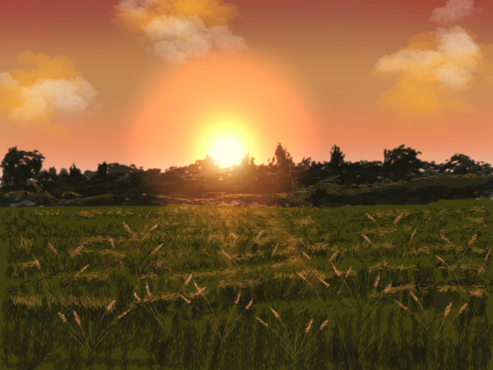

Boat Drawing

Boat Drawing Time-Lapses
Procreate
Drawing has always been one of my favorite ways to unwind and express myself. Whether it’s sketching something spontaneous or carefully crafting a concept, I love how drawing lets me slow down and focus on the details. I usually work digitally using Procreate, which gives me the freedom to experiment with color, texture, and lighting in ways that traditional mediums can’t. It’s also super satisfying to see a piece evolve from a rough idea into something polished and expressive.
What I enjoy most is how drawing can capture a mood or tell a story without needing any words. Sometimes I’ll start with a song or a feeling and try to translate that into an image. I love playing with atmosphere—stormy skies, glowing light, or bold shadows—to create something immersive. Every drawing feels like a little creative experiment, and no matter the result, the process itself is what keeps me coming back.
Below I'll show some photos and time-lapses of my drawings!
Grass Drawing
Grass Drawing Time-Lapse
Boat Drawing
Boat Drawing Time-Lapses
Below I'll show some photos I took by changing my camera settings and playing around with colour!
Photo 1

Photo 2

Before Edited in GIMP

After Editing in GIMP!